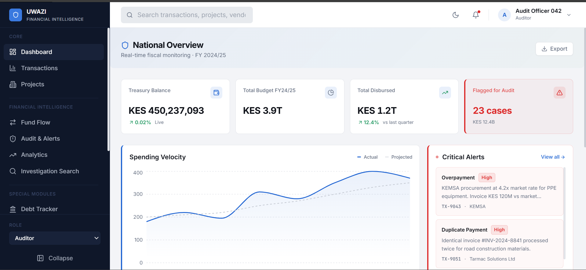
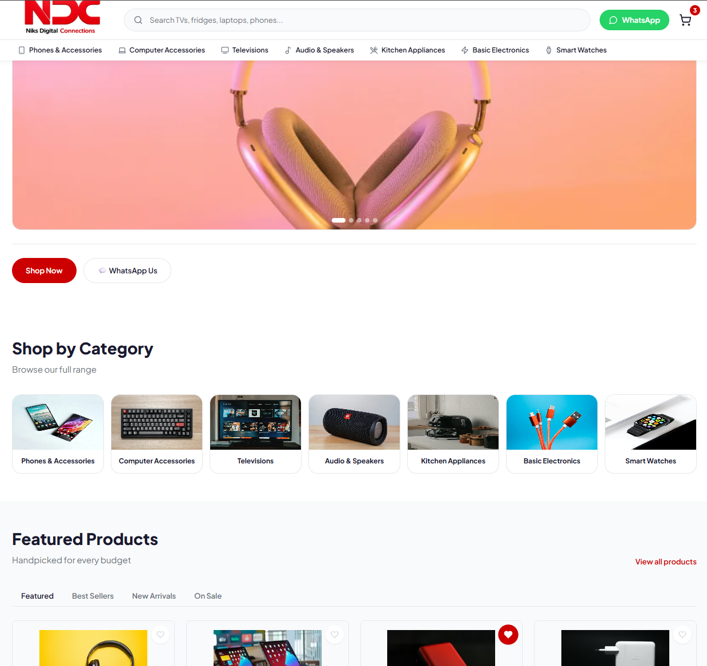
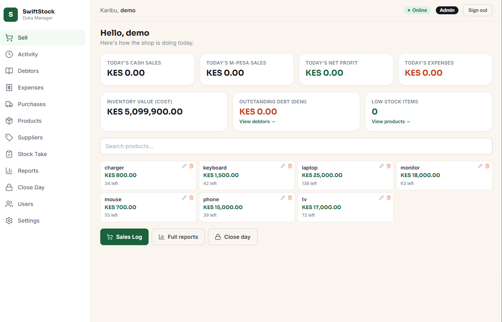
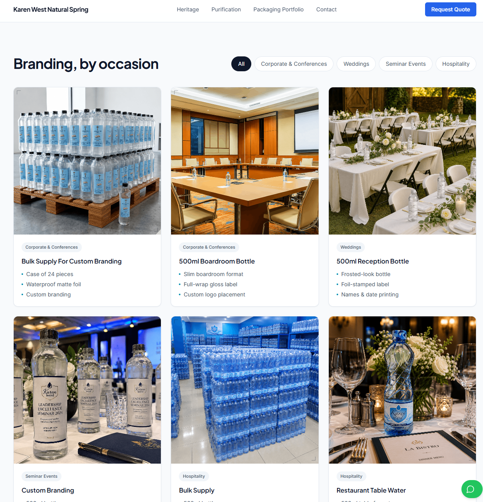
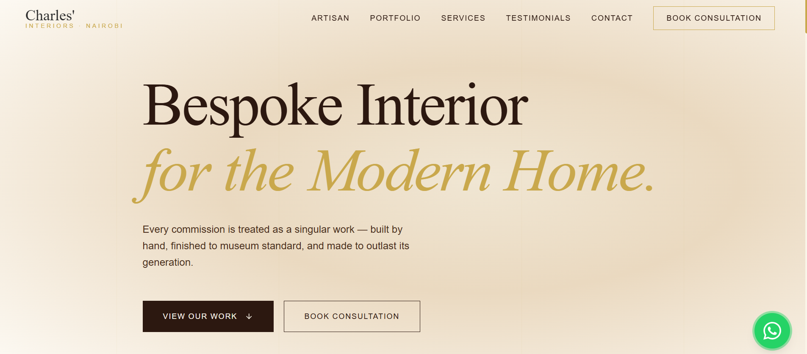
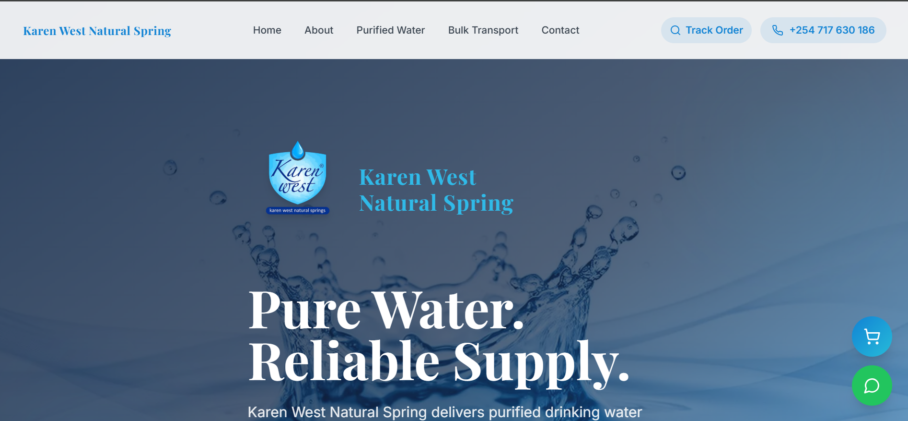
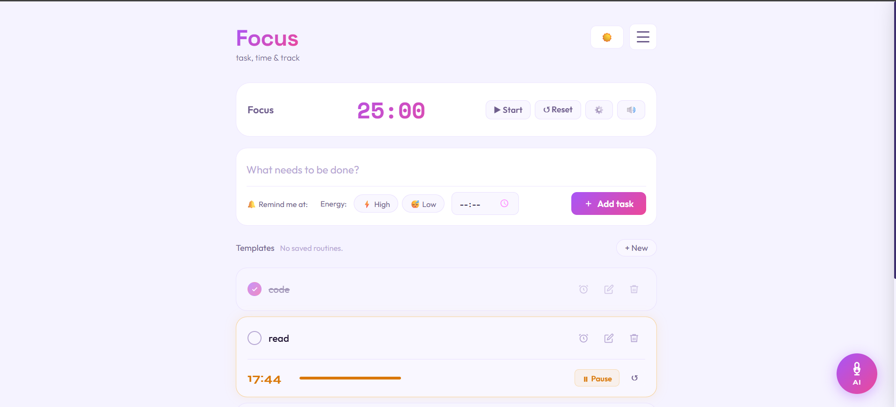
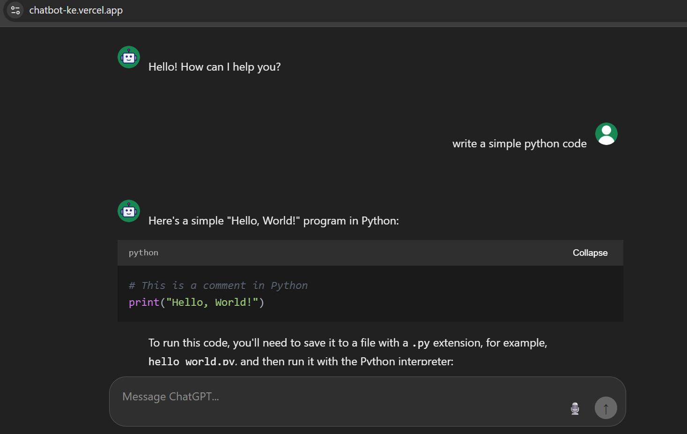

Screenshots and details of my recent work.
A public accountability platform designed to make government expenditure searchable, traceable, and easier to investigate. Citizens can explore financial records, submit cases, and track investigation workflows through a centralized transparency dashboard.

A modern commerce platform built for electronics retail operations. The system combines product management, inventory tracking, secure M-Pesa payments, and streamlined order fulfillment to support day-to-day business growth.

A full point-of-sale and shop management platform built for Kenyan SME retailers — real-time sales recording, credit sales (Deni) tracking, expense logging, stock management, and daily financial close-out with cash/M-Pesa reconciliation. Built with role-based access so cashiers and admins see exactly what they need.
This is a live demo running on sample data — feel free to click around, but please note anything you add here is temporary and not saved. The production version is deployed for a real retail business with its own private database.

An enterprise-grade B2B packaging and branding showcase designed for corporate events, weddings, and hospitality. Features a visual 5-step laboratory purification pipeline, a dynamic label configurator, and direct WhatsApp quote dispatch, built with a clean, clinical design architecture.

A premium digital storefront and lead generation engine engineered for a luxury upholstery studio. Features high-fidelity media rendering optimized for showcasing design craftsmanship, coupled with an automated customer onboarding system that securely captures and routes high-intent project configurations directly to the operational mailbox.

A conversion-focused business website combining local SEO, customer inquiry management, transactional email workflows, and search visibility optimisation. Built to strengthen online presence while supporting operational efficiency.

A mobile‑first productivity tool that combines task management, Pomodoro timing, focus sounds (brown, white, pink, rain, ocean), and an AI assistant – all wrapped in a Capacitor‑driven native Android APK. Task reminders and timer alerts are delivered via background‑ready local notifications. AI is powered by Groq’s Llama 3.1 model through a Cloudflare Worker proxy, keeping API keys secure. Templates, daily insights, notes, and full backup/restore make it a complete daily driver.

A responsive, dark-mode conversational interface engineered for technical problem-solving and general knowledge ingestion. Features dynamic Markdown parsing with collapsible syntax-highlighted blocks for complex code rendering, paired with hands-free prompt dictation via the native Web Speech API and an in-memory ephemeral state system to preserve user context windows natively throughout the active session lifecycle.
